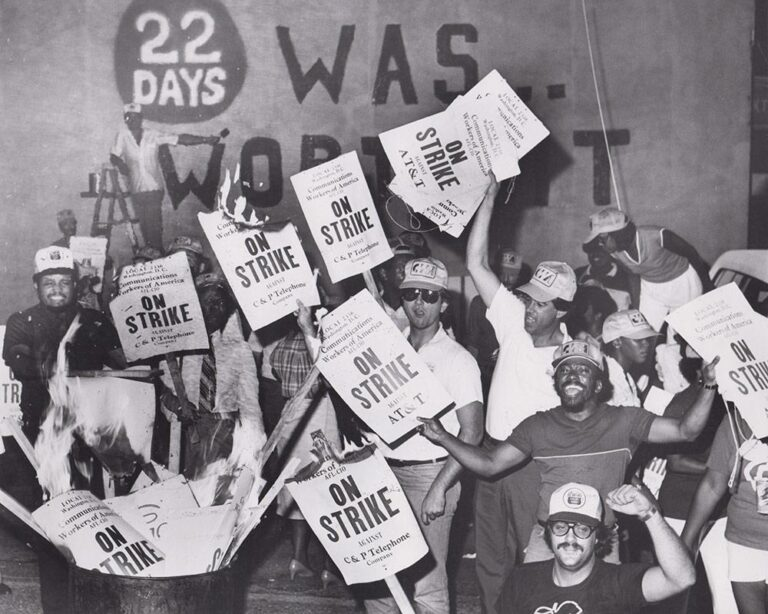
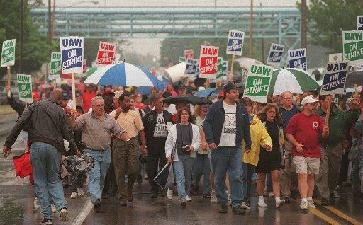

Americans' democratic and labor rights are on the verge of destruction. Despite the current crisis, workers have the power to fight back and win. In 2023, workers walked off their jobs at the highest levels this century. Nonetheless, more battles must be won and that requires more brave men and women to step up. Strengthen the modern labor movement by learning about its triumphs and failures!

Credit: American Postal Workers Union

Credit: MLive
Credit: Kim Komenich, SF Chronicle
Credit: Ross D. Franklin, AP
Credit: AP